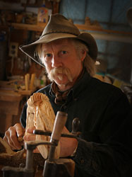

 I believe we are all born with the urge to be creative. This can take many forms or it may lie dormant in an individaul never to be prodded or coaxed awake through his entire life. Modern technology allows most anyone to be content with the inventiveness of others. You can be seduced, entertained, made to laugh, cry or desire without physically making a move. It is your choice.
I carve primarily with hand tools, using rotary equipment to do the fine detail work. I love the feel of a sharp chisel or gouge through a piece of wood as my vision materializes chip by chip. A form of art by subtraction only.
The woods I use include yellow pine (Ponderosa), western juniper, basswood and butternut. I have found indivdual pieces of wood are like people - they vary greatly from one to another. Often times it depends solely on how much sun shone on them when they where brought up.
Besides my love of wood, I am inspired by my love of the outdoors and have been a hunter and a trapper for most of my life. This this tends to accentuate my awareness and deepening the understanding of the subjects that I choose. Mountain Men, Native Americans and wildlife are full of uniqueness fashioned from their lives spent in a raw environment called creation.
When I am floating down a river, climbing a mountain or snowshoeing through a drainage, I am inspired. I feel the breath of life in me at the sight of a red tail hawk soaring overhead or the iridescent eyes of a lynx or an old buffalo horn sticking out of a creek bank. All that and a thousand more experiences are in my work.
It is my hope that you see and enjoy that.